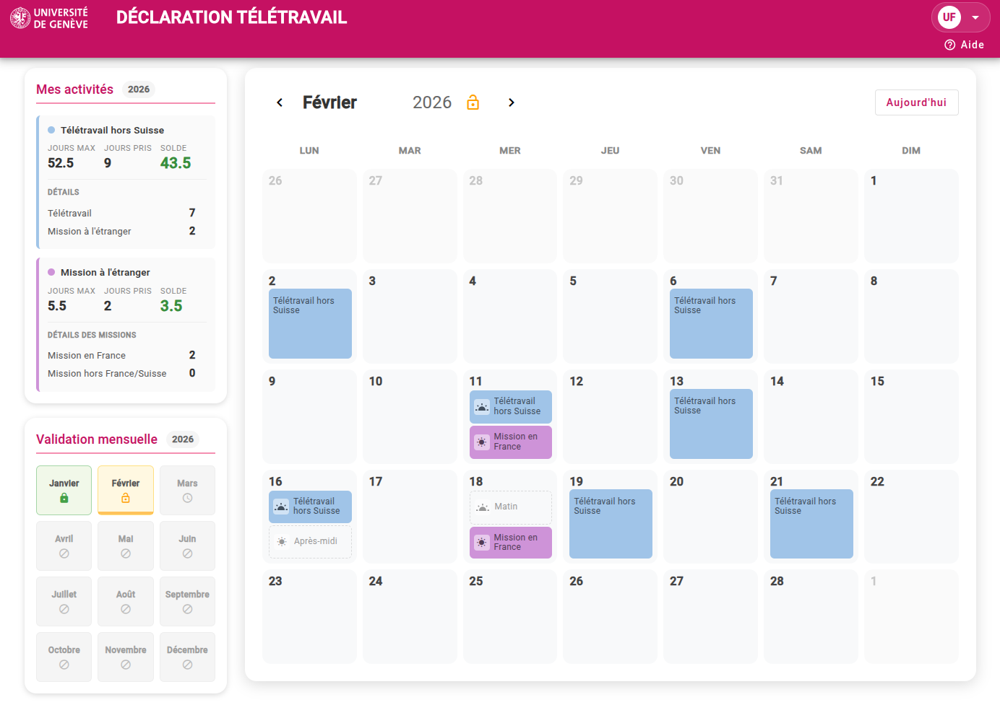

Scannez pour voter

Thème en cours
Systèmes d'information et science des services — UNIGE
L'IA dans le développement d'application
État des lieux et pratique — Équipe RockSolid, Division informatique
Behind the click
Nicolas Forney
Développeur & Ingénieur DevOps @DiSTIC
Équipe
RockSolid
+30 applications web pour les
collaborateur·rice·s,
enseignant·e·s et étudiant·e·s de l'UNIGE
📚 pgc.unige.ch — Programme des cours
🌐 portail.unige.ch — Portail applicatif
📧 Uniliste — Envoi d'emails
💰 Aide financière — En développement
⚙️ + APIs et web services divers
🏠
declaration-teletravail.unige.ch
...
Au programme aujourd'hui
- 🧭 Contexte et objectifs
De quoi allon-nous parler ? - 🤖 Fondamentaux IA
Spectre IA et agents de code - 🛠️ Pratique terrain
Retour terrain de l'équipe RockSolid - 🧪 Cadrage
Tests, limites, sécurité et discipline - 🚀 Perspectives et discussion
entrepreneuriat et discussion ouverte
Sondage
Le spectre du développement assisté par IA
💡
Autocomplétion
Github Copilot (inline)
💬
Chat assisté
Gemini chat, Claude chat,
ChatGPT
🤖
Mode agentique IDE
Github Copilot Agent, Google Antigravity
Agent CLI
Claude Code, OpenCode, Github
Copilot CLI, Gemini CLI
Qu'est-ce qu'un agent IA pour le code ?
- Gérer un contexte important (un repository entier)
- Exécuter des commandes
- Forcer un cadre de travail (outils, conventions)
- Récupérer les résultats pour les étapes suivantes
- Interagir avec l'IDE et les outils de dev
- Interagir avec des services externes (API, MCP, CLI)
Outils agentiques mainstream
Github Copilot (VS Code/IntelliJ/CLI)
Claude Code
OpenCode
Google (Antigravity/CLI)
Cursor
Windsurf
Lovable
Replit
Cas concret : Déclaration télétravail
Développé
avec Dardan Salihi
- Besoin métier réel
- Application en production
- Interface rapidement montrable et testable
- Cycles d'itération courts

Réduire la distance entre idée et démonstration
Besoin
Maquette
→
Application
→
Feedback
↻
Ajustement
L'IA réduit fortement le temps entre une demande et une version visible.
Ce qu'on a vraiment gagné
⏱️
Feedback métier
Retour métier plus rapide
Une version utilisable disponible très tôt dans le cycle.
🔄
Cadence
Itérations plus nombreuses
Boucles courtes, plus d'ajustements possibles rapidement.
🔭
Champ
Exploration plus large
Plus facile de tester des variantes et des approches.
✨
Finition UX
Interfaces de meilleure qualité
Plus de temps pour ajuster l'expérience utilisateur.
Le modèle compte. Le cadre compte encore plus.
📄 AGENTS.md / CLAUDE.md / GEMINI.md
🛠️ skills/
🔄 custom commands
🔗 MCP Integrations
🪝 Hooks
📚 docs/
Guider l'agent
- Donner le contexte du projet
- Définir les conventions
- Fournir des exemples
- Limiter le périmètre d'action
Moins l'IA doit deviner,
plus elle devient fiable.
plus elle devient fiable.
Le problème de l'IA ≠ votre problème
Le problème que l'IA pense devoir résoudre
et celui que vous voulez résoudre
ne sont pas forcément les mêmes.
et celui que vous voulez résoudre
ne sont pas forcément les mêmes.
- Planifier avant de prompter
- Spécifier ce que vous attendez vraiment
- Vérifier que la direction est la bonne
- Guider l'IA, ne pas la suivre aveuglément
Tester avec l'IA
🔬
Tests unitaires
- Test d'un composant ou d'une fonction de manière isolée
🔗
Tests backend (JUnit)
- Test d'intégration du backend avec base de données, API ou données simulées
🌐
Tests Frontend (Cypress)
- Test end-to-end d'un parcours utilisateur dans l'interface
Ce que l'IA apporte à l'ensemble des tests
›
Couverture plus complète et edge cases souvent oubliés
›
Scénarios de test plus rapides à écrire, y compris les cas complexes
›
Génération assistée de mocks, fixtures et sélecteurs
›
Maintenance et évolution des suites de tests simplifiées
Plus rapide, pas plus simple
- Gratification rapide / addiction
- Hallucinations et code plausible mais faux
- Davantage de task switching
- Dépendance à la fenêtre de contexte
- Coût en tokens à surveiller
L'IA accélère la production.
Elle ne simplifie pas la réflexion.
Elle ne simplifie pas la réflexion.
Sécurité : isoler l'IA avec DevContainer
🐳
IntelliJ + Docker Compose
Dev
Container isolé du système hôte
- L'agent IA tourne dans un container isolé
- Pas d'accès au filesystem hôte
- Secrets gérés par le container orchestrateur
- Réseau contrôlé
- Reproductible pour chaque développeur
Plus de puissance = plus de discipline
- Git et diff systématique
- Revue humaine obligatoire
- Tests et validation
- Pas de données personnelles sensibles
- Pas de secrets dans les prompts
Ne pas faire confiance à l'IA. Créer un cadre où
elle peut être utile sans faire perdre la maîtrise.
Le rôle du·de la développeur·euse change
Compétences qui montent
- Capacité à spécifier et cadrer
- Architecture et vision système
- Revue de code et esprit critique
- Orchestration d'agents
- Davantage généraliste
Questions ouvertes
- Le « paradoxe du junior »
- Peut-on apprend-on sans faire ?
- Qui est responsable du code IA ?
- Quelle place pour la créativité ?
N'attendez pas le « bon cours »
L'accès à la technologie a radicalement changé.
📖
Avant
Attendre le bon cours, le bon
livre, le bon tuto
🚀
Maintenant
Poser la question, essayer,
itérer, apprendre en faisant
Sondage
Scannez pour voter
L'esprit entrepreneurial
Même sans créer votre entreprise, vous pouvez être entrepreneur·e à votre
poste.
Avec l'IA, il est devenu beaucoup plus facile d'entreprendre :
chercher de meilleures façons de faire, explorer des idées, prototyper, automatiser.
chercher de meilleures façons de faire, explorer des idées, prototyper, automatiser.
Et demain ?
🤖
Workflows agentiques en CI/CD
👁️
Code review assisté par IA
🎯
Agents spécialisés par domaine
Nouvelles expérimentations
Industrialisation
Sécurisation
Discussion ouverte
Questions & Débat
L'IA va-t-elle remplacer les développeur·euse·s ?
Faut-il interdire l'IA dans les projets étudiant·e·s ?
Qui est responsable d'un bug introduit par l'IA ?
Faut-il interdire l'IA dans les projets étudiant·e·s ?
Qui est responsable d'un bug introduit par l'IA ?
1 / 20